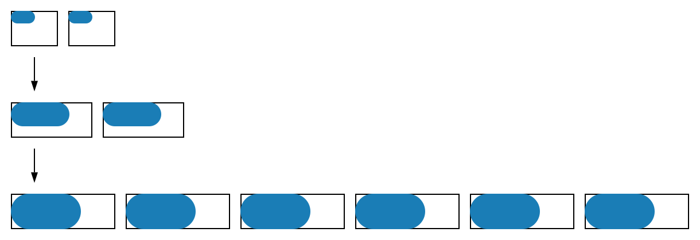

When bootstrapping an index, one must consider node resource configuration and number of nodes. The strategy is to iterate:
While doing this, ensure the cluster is never more than 50% full - this gives headroom to later increase/shrink the index and change schema configuration easily using automatic reindexing. It is easy to downscale resources after the bootstrap, and it saves a lot of time keeping the clusters within limits - hence max 50%.
Review the Vespa Overview to understand the different between container and content clusters before continuing.
The content node resource configuration should not have ranges for index bootstrap, as autoscaling will interfere with the evaluation in this step. This is a good starting point, make sure there are no ranges like [2,3]:
<nodes count="2">
<resources vcpu="2.0" memory="8Gb" disk="50Gb"/>
</nodes>
To evaluate how full the content cluster is, use metrics from content nodes - example:
$ curl --cert data-plane-public-cert.pem --key data-plane-private-key.pem \
https://vespacloud-docsearch.vespa-team.aws-us-east-1c.public.vespa.oath.cloud/metrics/v2/values | \
jq '.nodes[] | select(.role|startswith("content/documentation")) |
{ hostname: .hostname,
"disk.util": .node.metrics[] | select(.values."disk.util") | .values."disk.util",
"mem.util": .node.metrics[] | select(.values."mem.util") | .values."mem.util"
}'
...
{
"hostname": "h2564a.prod.aws-us-east-1c.vespa-external.aws.oath.cloud",
"disk.util": 0.646856704,
"mem.util": 8.3981990814209
}
{
"hostname": "h2550a.prod.aws-us-east-1c.vespa-external.aws.oath.cloud",
"disk.util": 0.648052736,
"mem.util": 8.228063583374
}
Metrics parsing notes:
/metrics/v2/values -
this dumps metrics from all nodesOnce able to dump the metrics above, you are ready to bootstrap the index.
For performance, feed using the vespa-http-client - download the client and test it using your own endpoints and schema:
$ curl -L -o vespa-http-client-jar-with-dependencies.jar \
https://search.maven.org/classic/remotecontent?filepath=com/yahoo/vespa/vespa-http-client/7.391.28/vespa-http-client-7.391.28-jar-with-dependencies.jar
$ cat docs.json
{
"put": "id:mynamespace:music::123",
"fields": {
"album": "A Head Full of Dreams",
"artist": "Coldplay",
"year": 2015,
"category_scores": {
"cells": [
{ "address" : { "cat" : "pop" }, "value": 1 },
{ "address" : { "cat" : "rock" }, "value": 0.2 },
{ "address" : { "cat" : "jazz" }, "value": 0 }
]
}
}
}
$ ENDPOINT=https://vespacloud-docsearch.vespa-team.aws-us-east-1c.public.vespa.oath.cloud/
$ java -jar vespa-http-client-jar-with-dependencies.jar \
--useTls --certificate data-plane-public-cert.pem --privateKey data-plane-private-key.pem \
--endpoint $ENDPOINT \
--file docs.json
$ curl --cert data-plane-public-cert.pem --key data-plane-private-key.pem \
$ENDPOINT/document/v1/mynamespace/music/docid/
{
"pathId": "/document/v1/mynamespace/music/docid/",
"documents": [
{
"id": "id:mynamespace:music::123",
"fields": {
"artist": "Coldplay",
"year": 2015,
"category_scores": {
"cells": [
{ "address": { "cat": "pop" }, "value": 1 },
{ "address": { "cat": "rock" }, "value": 0.20000000298023224 },
{ "address": { "cat": "jazz" },"value": 0 }
]
},
"album": "A Head Full of Dreams"
}
}
],
"continuation": "AAAACAAAAAAAAAAGAAAAAAAAAAUAAAAAAAABAAAAAAEgAAAAAAAAoAAAAAAAAAAA",
"documentCount": 1
}
| Step | Description |
|---|---|
| 1% feed |
The purpose of this step is to feed a tiny chunk of the corpus to:
Feed a small data set, observing the util metrics, stop no later than 50% memory/disk util. The resource configuration should be modified so disk is in the 50-80% range of memory. Example: if memory util is 50%, disk util should be 30-45%. The reasoning is that memory is a more expensive component than disk, better over-allocate on disk and just track memory usage. Look at memory util. Say the 1% feed caused a 15% memory util - this means that the 10% feed will take 150%, or 3X more than the 50% max. There are two options, either increase memory/disk or add more nodes. A good rule of thumb at this stage is that the final 100% feed could fit on 4 or more nodes, and there is a 2-node minimum for redundancy. The default configuration at the start of this document is quite small, so a 3X at this stage means triple the disk and memory, and add more nodes in later steps.
Deploy changes (if needed).
Whenever node count increases or resource configuration is modified, new nodes are added,
and data is migrated to new nodes. Example: growing from 2 to 3 nodes means each of the 2 current nodes
will migrate 33% of their data to the new node.
Read more in Elastic Vespa.
It saves time to let the cluster finish data migration before feeding more data.
In this step it will be fast as the data volume is small,
but nevertheless check the
$ curl --cert data-plane-public-cert.pem --key data-plane-private-key.pem \
https://vespacloud-docsearch.vespa-team.aws-us-east-1c.public.vespa.oath.cloud/metrics/v2/values?consumer=Vespa | \
jq '.nodes[] | select(.role|startswith("content/documentation")) |
.services[] | select (.name=="vespa.distributor") |
.metrics[].values."vds.idealstate.merge_bucket.pending.average"'
...
0
0
At this point, you can validate that both memory and disk util is less than 5%, so the 10% feed will fit. |
| 10% feed |
Feed the 10% corpus, still observing util metrics. As the content cluster capacity is increased, it is normal to eventually be CPU bound in the container or content cluster. To find CPU utilization, add this to the JSON print in the preparations: "cpu.util": .node.metrics[] | select(.values."cpu.util") | .values."cpu.util",For container clusters, replace with select(.role|startswith("container/default"))
(assuming the cluster is named default).
A 10% feed is a great baseline for the full capacity requirements.
Fine tune the resource config and number of hosts as needed.
If you deploy changes, wait for the
Again validate memory and disk util is less than 5% before the full feed. |
| 100% feed |
Feed the full data set, observing the metrics. You should be able to estimate timing by extrapolation, this is linear at this scale. At feed completion, observe the util metrics for the final fine tuning.
A great exercise at this point is to add a node then reduce a node, and take the time to completion
( It can be a good idea to reduce node count to get the memory util closer to 70% at this step, to optimize for cost. However, do not spend too much time optimizing in this step, next step is normally sizing for query load. This will again possibly alter resource configuration and node counts / topology, but now you have a good grasp at how to easiest bootstrap the index for these experiments. |
Make sure you are able to feed and access documents as the example in preparations. Read security model for cert/key usage.
Feeding too much causes a feed blocked state.
Add a node to the full content cluster in services.xml, and wait for data migration to complete -
i.e. wait for the vds.idealstate.merge_bucket.pending.average metric to go to zero.
It is better to add a node than increasing node resources, as data migration is quicker.